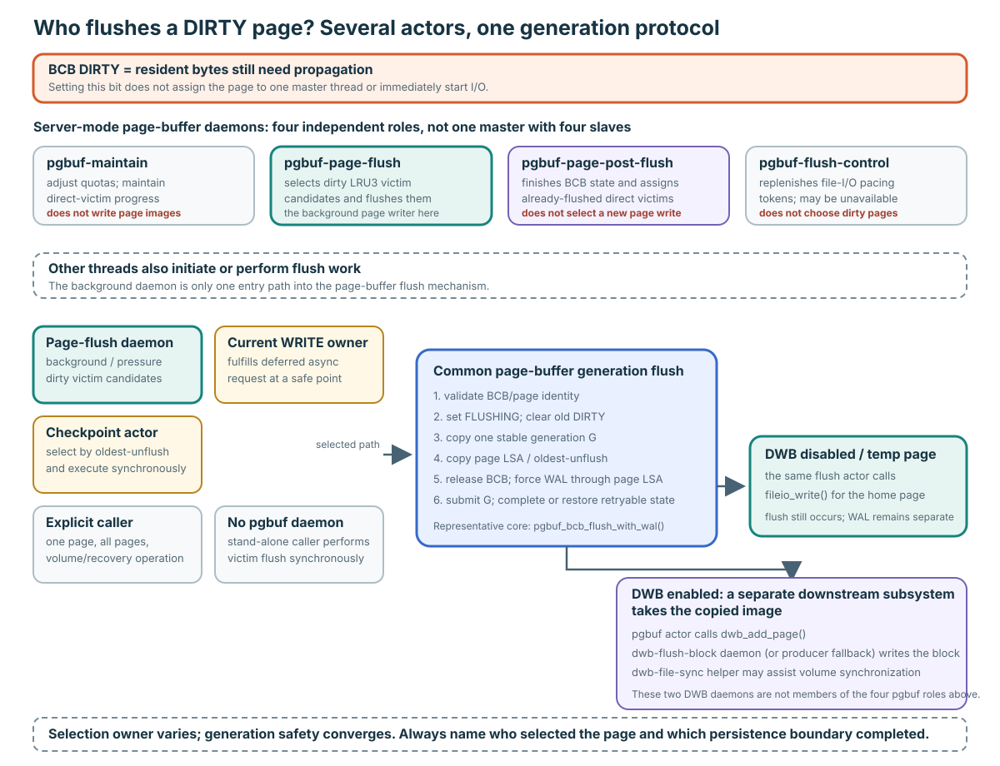
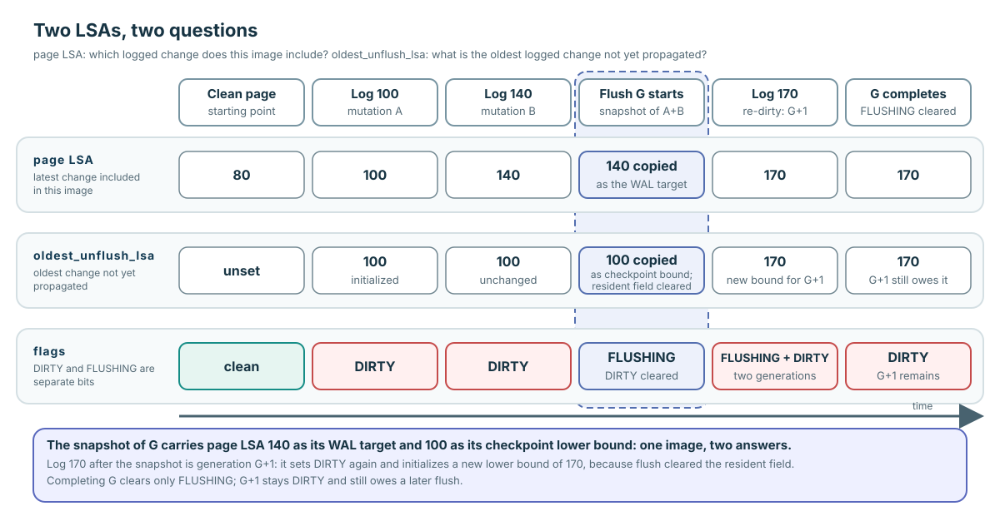
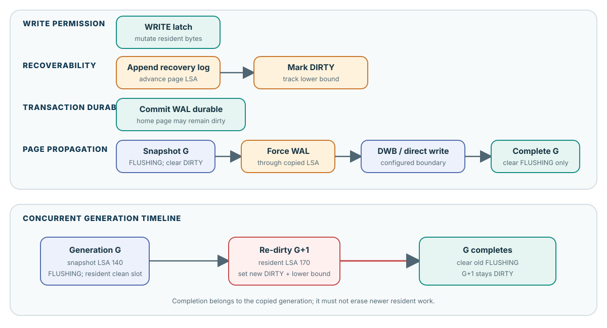
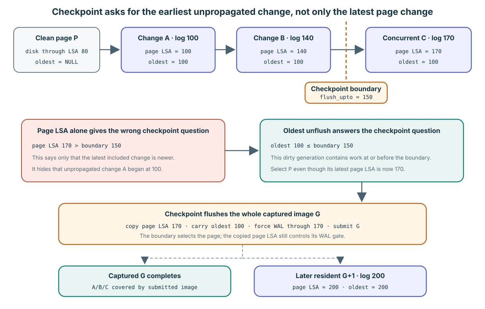
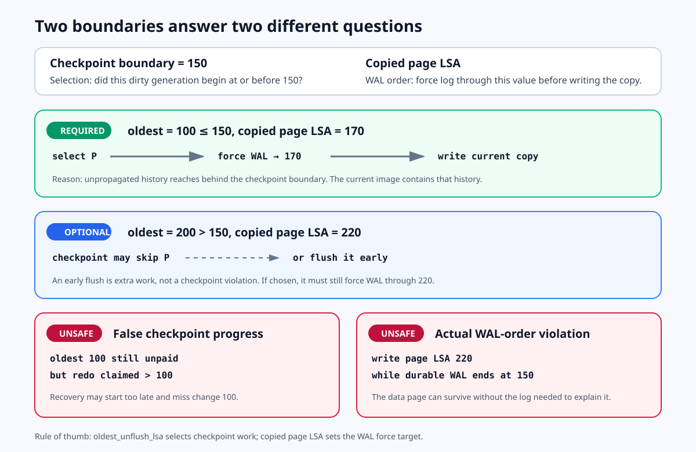

DIRTY records the gap between memory and disk
Flush means: make a stable copy of a changed resident page and send that copy toward persistent page storage.
| Place | State | Why it matters |
|---|---|---|
| Buffer frame in memory | New page bytes | Fast, but lost if the process or machine loses volatile memory. |
| Page's home location | Older page bytes | The durable page copy has not caught up yet. |
BCB DIRTY | Set | Records the unfinished job: the resident change still needs propagation. |
A flush pays that propagation debt. It helps a checkpoint limit recovery work, helps shutdown move dirty pages out, and makes a clean unfixed frame eligible for replacement. Flush is not commit, unfix, eviction, or page deletion. A successfully flushed page may remain in memory.
DIRTY means “there is page work to do.” FLUSHING means “a copied version is doing that work now.”Four peer daemon roles; only one is the background page flusher

DIRTY publishes unpaid propagation work. It does not assign the page to a master thread or immediately start I/O.
Pinned server mode attempts to create four independent, single-thread daemon objects—not one master plus four flush slaves. Only pgbuf-page-flush selects and submits dirty victim candidates in the background.
| Page-buffer daemon | Job | Starts dirty-page I/O? |
|---|---|---|
pgbuf-maintain | Adjust quotas, then call an intended direct-victim backup whose pinned loops are blocked as written (VS-20). | No. |
pgbuf-page-flush | Select dirty LRU3 victim candidates under background/pressure policy and flush them. | Yes. |
pgbuf-page-post-flush | Finish BCB state and victim handoff for an already-submitted flush. | No new page write. |
pgbuf-flush-control | Refresh the post-write soft-pacing token budget; it may be absent if initialization fails. | No. |
The daemon is only one selection path
- The separate log-checkpoint daemon/caller runs
pgbuf_flush_checkpoint()in its own thread and selects pages byoldest_unflush_lsa. - A foreground storage, recovery, volume, or shutdown caller can run a one-page or whole-pool flush synchronously.
- If another thread wants to flush a page held WRITE, it sets an async request. The WRITE owner performs the safe copy at unfix or another explicit safe point; a synchronous requester waits.
- Stand-alone mode has no page-buffer daemon objects, so the requesting thread performs victim flush synchronously.
These paths converge on the same generation mechanism: claim FLUSHING, copy stable G, force WAL, submit via DWB or direct I/O, then complete or restore retryable state. DWB has two separate downstream helper daemons; they are not part of the four page-buffer roles. With DWB disabled, the selected page-buffer actor calls fileio_write() itself.
Verified mechanism; revision-bound topology: daemon tasks and creation are pinned page_buffer.c:16972–17255; checkpoint selection is 4173–4610; deferred-owner flush is 6815–6890 and 8810–8901; stand-alone fallback is 11678–11702.
Continue to Lesson 6A for every daemon's trigger, shared state, handoff, and cost →
The writer must be allowed to continue
The flush copies the current resident bytes into private memory. We call that frozen copy G. After the copy is made, another writer may change the resident page again. We call the newer resident bytes G+1.

G and G+1 are teaching labels, not counters stored in the BCB.
| State | Plain meaning |
|---|---|
DIRTY=1, FLUSHING=0 | The resident page needs a flush. |
DIRTY=0, FLUSHING=1 | Copy G is in flight; no later resident change is known yet. |
DIRTY=1, FLUSHING=1 | G is in flight and a newer resident G+1 also needs a later flush. |
DIRTY=0, FLUSHING=0 | No resident propagation debt and no copy in flight. |
Two facts can be true at the same time
When flush starts, it marks FLUSHING and clears the old DIRTY. This does not lose the work: the flusher now owns copy G. The cleared DIRTY bit becomes an empty signal slot for the next writer.
- G starts:
DIRTY=0, FLUSHING=1. - A writer changes the resident page:
DIRTY=1, FLUSHING=1. - G succeeds: clear only
FLUSHING. - The surviving
DIRTY=1correctly says G+1 still needs a flush.
FLUSHING also blocks a second competing flush. Otherwise an older write G could finish after a newer write G+1 and overwrite it. A synchronous caller can wait for the current flusher instead of starting another one.
Verified mechanism: concurrent-flush exclusion and waiting are at pinned page_buffer.c:8809–8901; the flag helpers are at 16077–16126.
Log durability and page propagation are different

A transaction can commit before every changed page reaches its home location. WAL makes that safe.
A flush is about the page image. WAL is about the log needed to explain that image. For a logged non-temporary page, the log must be forced far enough before the copied page image is submitted.
One says “how new”; the other says “how far back”
| Value | Question | Used for |
|---|---|---|
| Copied page LSA | What is the latest logged change included in these copied bytes? | Force WAL through this value before writing the copy. |
oldest_unflush_lsa | Where did this still-unpropagated dirty run begin? | Decide whether this page belongs to checkpoint work and bound the next redo start. |
Example: disk has P through 80. P changes at log 100, then 140, then 170 without any completed flush. Its page LSA moves 100 → 140 → 170. Its oldest_unflush_lsa stays 100, because the change at 100 is still not represented by a completed page propagation.
The boundary selects work by its beginning
Suppose the checkpoint boundary, named flush_upto_lsa, is 150. The checkpoint asks: “Does this still-unpropagated dirty run reach back to 150 or earlier?”

P is selected because 100 ≤ 150. It writes the current image, not a historical image from 100.
oldest_unflush_lsa=100 ≤ 150: this checkpoint should try to flush P.- The current copy contains changes through page LSA 170.
- Before writing that copy, force WAL through 170.
What if oldest_unflush_lsa > flush_upto_lsa?
That is not a violation. If oldest is 200 and the checkpoint boundary is 150, this dirty run began after the checkpoint's chosen boundary. The checkpoint may skip it. Another background or pressure-driven flush may still write it early; that is safe extra work if the normal WAL rule is followed.

Checkpoint selection and WAL ordering use different values. “Newer than the checkpoint boundary” does not mean “unsafe to flush.”
What is actually unsafe?
| Mistake | Crash consequence |
|---|---|
| P still has unpaid oldest 100, but checkpoint records a redo start later than 100. | Recovery may begin too late and never replay the missing change at 100. Merely leaving P dirty is not itself corrupt if the returned minimum keeps redo at or before 100; the false progress claim is the dangerous part. |
| A copied page with page LSA 220 reaches page storage while durable WAL ends at 150. | The surviving page contains a change whose explaining log may be absent. This is the actual write-ahead-order violation. |
Verified mechanism: the field meaning and initialization are at pinned page_buffer.c:541 and 5041–5071. Checkpoint selection is at 4172–4186 and 4247–4257; revalidation and the smallest remaining lower bound are at 4533–4600. The log manager uses the result at log_page_buffer.c:6974–7030 and 7217–7225.
Eight source steps, four human-sized actions
- Claim the job: validate the BCB, set FLUSHING, clear the old DIRTY.
- Freeze G: copy the bytes, copied page LSA, and oldest-unflush LSA; clear the resident lower bound so G+1 can get its own.
- Send G safely: release BCB protection, force WAL through the copied page LSA, then use DWB or direct write.
- Close the job: reacquire protection, clear FLUSHING, and wake waiters. Do not erase a newer DIRTY.
Verified mechanism: the ordinary path is pinned page_buffer.c:10723–10962.
DWB changes the physical write route
The private copy isolates G from later writers. DWB is an optional protected destination for that copy. When DWB is unavailable or the page is temporary, the page-buffer path uses direct fileio_write() instead. Flush still happens, and logged non-temporary pages still obey WAL.
| DWB path | Direct path |
|---|---|
| Add copied G to DWB; later DWB processing propagates it to the home volume. | Write copied G to its home data-volume location. |
| Provides DWB torn/incomplete-page protection. | Does not provide that DWB repair source. |
Verified mechanism: stable copy and route choice are at pinned page_buffer.c:10735–10834; WAL gating and DWB/direct submission are at 10836–10899.
Finish G without losing G+1
On success, completion clears only FLUSHING. If a writer created G+1, its DIRTY bit and new oldest-unflush value remain for the next flush.
On ordinary DWB/direct-I/O failure, the path clears FLUSHING, restores the captured DIRTY debt and oldest-unflush lower bound, wakes waiters, and returns failure. The work remains visible and retryable.
Verified mechanism: ordinary failure reconstruction is at pinned page_buffer.c:10908–10923. Earlier TDE/DWB preparation returns remain routed to VS-12 in the uncertainty registry rather than being declared a proven defect here.
Answer these before reading source
| Question | Answer |
|---|---|
| Boundary 150, oldest 100, page LSA 170? | Select for checkpoint; force WAL through 170; write the current copy. |
| Boundary 150, oldest 200, page LSA 220? | Checkpoint may skip. Flushing anyway is safe extra work if WAL is forced through 220. |
| What must never happen? | Claim redo may start after unpaid history, or let a page image reach storage before its copied page LSA is durable in WAL. |
Explain the two boundaries without mixing them
Prompt
First explain why DIRTY does not identify one flusher and name two actors that could execute this work. Then use checkpoint boundary 150: P has oldest-unflush 200 and page LSA 220. May checkpoint skip P? May another flusher write P? If so, how far must WAL be forced? Contrast this with oldest-unflush 100.
What this lesson establishes
The pinned source establishes the ordinary control flow, selection predicate, WAL gate, flag transitions, and ordinary rollback described here. It does not by itself prove physical device persistence timing or every early-error runtime effect. Name the observed boundary instead of saying only “written.”
Read the simple model first, then trace the implementation
Trace pinned page_buffer.c:10723–10962. Mark claim, copy, WAL gate, submission, and completion. Use the canonical Core page for the full evidence boundary.